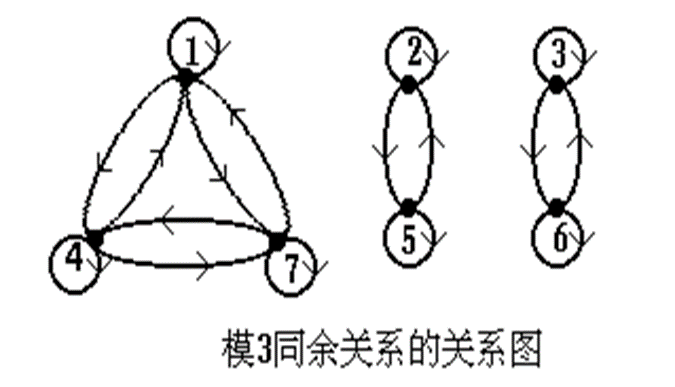

次序关系
本文最后更新于 2024年11月1日 晚上
次序关系
偏序关系
- 自反,反对称,传递
- \(\leq\)表示偏序关系,\(<P,\leq\)表示偏序结构
- 例:\(\lt N,\leq\gt,\lt N,\geq\gt,\lt P(A),\subseteq\gt,\lt I_+,|\gt\)
全序关系
- 设\(\lt P,\leq\gt\)是一个偏序结构,如果对于任意\(x,y\in P\),或者\(x\leq y\),或者\(y\leq x\),则称\(\leq\)为P上的全序或线序,并称\(\lt P,\leq\gt\)为全序结构或链
- \(\forall x\forall y(x\in P\wedge y\in P\rightarrow x\leq y\vee y\leq x)\)
可比
对于偏序集合\(\lt P,\leq\gt,x,y\in P\),如果有\(x\leq y\)或者\(y\leq x\),就说P的元素x和y是可比的
严格偏序关系(拟序关系)
R是P上的严格偏序关系,当且仅当R是反自反的和传递的
<表示严格偏序关系,<\(P,<\)>为严格偏序(拟序)结构
\(\lt=\leq-I_P\)
遮盖
\(y遮盖x\Leftrightarrow x<y\wedge \neg \exists (z\in P\wedge x<z \wedge z<y)\)
哈斯图/偏序结构图
偏序结构通常用简化的关系图来表示
偏序结构中的特殊元素
\[ \begin{align} &\lt A,\leq\gt是偏序结构,并且B\subseteq A,则\\\\ &(1)b是B的最大元\Leftrightarrow b\in B\wedge \forall x(x\in B\rightarrow x\leq b)\\\\ &(2)b是B的最小元\Leftrightarrow b\in B\wedge \forall x(x\in B\rightarrow b\leq x)\\\\ &(3)b是B的极大元\Leftrightarrow \neg\exists x(x\in B\wedge b<x)\\\\ &(4)b是B的极小元\Leftrightarrow \neg\exists x(x\in B\wedge x<b)\\\\ \end{align} \]
- B的最大元、最小元若存在,则唯一
- B的极大元、极小元若存在,不一定唯一
- 若B是有穷集,则B的极大元、极小元必存在,但B的最大元、最小元不一定存在
良序结构
- 一个偏序结构\(\lt P,\leq\gt\),如果P的每一个非空子集都有一个最小元,则称\(\leq\)为良序关系
- 每个良序结构都是全序结构
- 但并非每个全序结构都是良序的
良序的充要条件
定理A
\[ \begin{align} &若\leq为集合P上的偏序关系,则\leq为P上良序关系,当且仅当\\\\ &a.\leq 为P上的全序关系；\\\\ &b.P上的每个非空子集都有极小元。\\\\ \end{align} \]
定理B
\[ \begin{align} &设\lt A,\leq\gt为全序结构,则\lt A,\leq\gt是良序结构的充分必要条件是:\\\\ &不存在A中元素的无穷序列a_0,a_1,a_2,...,使得对每个i\in N,皆有a_{i+1}<a_i\\\\ \end{align} \]
等价关系
如果集合A上的关系R是自反,对称,传递的,则R在A上是等价关系
等价类
设R是集合A上的等价关系,对于每个x\(\in\)A,A中与x有关系R的元素的集合称为x关于R的等价类,简称为x的等价类,记作\([x]_R\)
\[ [x]_R=\{y|y\in A\wedge x R y\}\\\\ [x]_R\subseteq A\]
定理
\[ \begin{align} &R是非空集合A上的等价关系,则有:\\\\ &(1)对于每个x\in A,x\in [x]_R,即[x]_R是A的非空子集\\\\ &(2)[x]_R=[y]_R当且仅当xRy\\\\ &(3)若x, y\in A且x \bar Ry,则[x]_R\cap [y]_R=\emptyset\\\\ &(4)\mathop{\bigcup}\limits_{x\in A}[x]_R=A \end{align} \]
\[ \begin{align} &(4)证明:\forall x\in A,x\in [x]_R,则x\in\mathop{\bigcup}\limits_{x\in A}[x]_R\\\\ &\forall x\in A,则[x]_R\subseteq A,所以\mathop{\bigcup}\limits_{x\in A}[x]_R\subseteq A\\\\ &故\mathop{\bigcup}\limits_{x\in A}[x]_R=A\\\\ \end{align} \]
商集
R是A上的等价关系,所有等价类组成的集合称为A关于R的商集,记作A/R
例如A={1,2,3,4,5,6,7},A/R={ {1,4,7}, {2,5}, {3,6} }

\[ \begin{align} &A/R=\{[x]_R|x\in A\} \end{align} \]
划分
\[ \begin{align} &设A是非空集合,\pi\subseteq \rho(A),若\pi满足以下三个条件,则称\pi为A上的一个划分:\\\\ &(1)对于每个S\in \pi,S=\emptyset\\\\ &(2)对于任意B,C\in \pi,若B\neq C,B\cap C=\emptyset\\\\ &(3)\cup \pi =A\\\\ &\pi中的元素称为划分块,\pi中划分块的个数称为秩\\\\ &有穷个划分快的划分称为有穷划分,否则称为无穷划分 \end{align} \]
定理
非空集合A上的等价关系R,决定了A上的一个划分,即商集A/R
定理
设\(\pi\)是非空集合A上的一个划分,若令:
\(R_\pi=\{\lt x,y\gt|存在S\in \pi使得x,y\in S\}\)
则\(R_\pi\)必是A上的等价关系且\(A/R_\pi=\pi\)
\[ \begin{align} &\pi=\{C_1,C_2,...,C_n\}\\\\ &R_\pi=(C_1\times C_1)\cup (C_2\times C_2)\cup...\cup(C_n\times C_n)\\\\ \end{align} \]